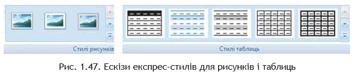
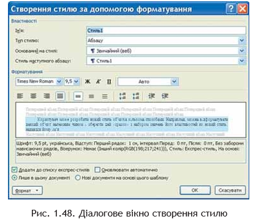
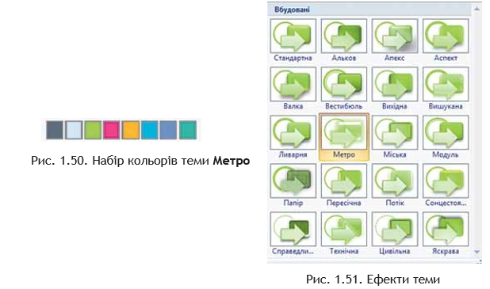
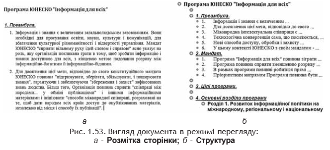
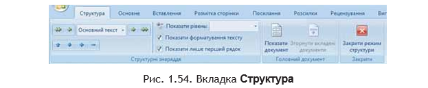

Розділ 6: Використання стилів у текстових документах
Загальні відомості про стилі
На попередніх уроках вам доводилося неодноразово створювати нові текстові документи та оформлювати їх належним чином, встановлюючи потрібні значення властивостей для об’єктів різних типів – тексту, таблиць, рисунків тощо. Якщо документ великий і містить значну кількість різноманітних об’єктів, то форматування кожного окремого елемента може зайняти багато часу.
Для прискорення оформлення документа і його об’єктів зручно використовувати стилі. Стиль – це набір значень властивостей об’єктів певного типу, який має ім’я.
Наприклад:
- Стиль абзаців визначає спосіб вирівнювання абзацу на сторінці, відступи від поля, міжрядковий інтервал тощо.
- Стиль таблиць задає колір і шаблон ліній меж таблиці, ширину стовпців, висоту рядків та спосіб обтікання таблиці текстом.
Текстовий процесор Word 2007 за замовчуванням має власну бібліотеку професійно розроблених стилів, так звані експрес-стилі, у яких значення властивостей об’єктів підібрані гармонійно, з урахуванням основних вимог дизайну. Такі стилі розроблені для всіх типів об’єктів текстового документа – тексту, таблиць, графічних зображень та ін. (табл. 1.10).
Ви вже застосовували їх під час форматування відповідних об’єктів. Як ви вже знаєте, використання стилів дає змогу однією дією одразу змінити кілька властивостей об’єкта.
Приклад: щоб відформатувати текст зі значеннями властивостей, які має стиль Заголовок 4 (табл. 1.9), потрібно виконати близько восьми окремих дій — вибрати відповідні елементи керування на вкладках або міні-панелі. А при застосуванні стилю Заголовок 4 достатньо лише однієї дії — вибору цього стилю з колекції.
Таблиця 1.9. Приклади стилів різних об’єктів у Word 2007
| Тип об’єкта | Ім’я стилю | Зразок оформлення об’єкта | Значення деяких властивостей |
|---|---|---|---|
| Текст | Заголовок 4 | Для швидкого оформлення тексту дуже зручно використовувати стилі. |
|
| Таблиця | Світлий список – Акцент 3 | Таблиця з кольоровими рядками та лініями для кращої читабельності. |
|
| Фігура | Центральний градієнт – Акцент 6 | Фігура зі світлим кольором і плавним градієнтом. |
|
Колекцію стилів користувач може доповнювати новими стилями, створюючи їх на основі вже існуючих або наново. Під час збереження документа з ним автоматично зберігаються і застосовані стилі, тобто при наступних відкриттях документа його вигляд залишатиметься таким самим.
Використання експрес-стилів
Зразки експрес-стилів до текстових об’єктів документа (символів, абзаців) відображені на вкладці Основне у групі Стилі. Кожний зразок демонструє оформлення тексту відповідним стилем.
Поруч із деякими з них міститься значок, який показує тип об’єктів, до яких цей стиль застосовується:
- до абзаців — ¶;
- до символів — а;
- до символів і абзаців — ¶а.
Відповідні групи елементів керування для вибору експрес-стилів інших об’єктів (таблиць, графічних зображень тощо) розміщені на тимчасових вкладках Конструктор чи Макет, які призначені для опрацювання об’єктів певного типу (рис. 1.47).
У вікні списку експрес-стилів для будь-якого об’єкта завжди відображається кілька зразків, які використовувалися останніми. Для перегляду інших потрібно скористатися кнопками цього списку. Щоб відкрити весь список, потрібно вибрати кнопку Додатково групи Стилі.
Для застосування експрес-стилю потрібно виділити об’єкт і вибрати у списку потрібний стиль. Зверніть увагу, що при цьому відбувається попередній динамічний перегляд вибраного стилю.
Стилі можна перейменувати або видалити, скориставшись командами контекстного меню зразка стилю. Важливо пам’ятати, що ці операції неможливі для стилів заголовків.
Для відмови від застосування експрес-стилю та відновлення властивостей об’єкта за замовчуванням потрібно вибрати одну з команд:
- Очистити форматування;
- Очистити;
- Скидання параметрів рисунка.
Ці команди розміщені на вкладках відповідних об’єктів (таблиць, рисунків тощо).
Створення нового стилю для текстових об’єктів
Користувач може розробити новий стиль об’єктів кількома способами. Наприклад, можна відформатувати певний об’єкт належним чином і зберегти цей «зразок» із набором значень його властивостей як новий стиль, надавши йому ім’я.
В іншому випадку значення параметрів форматування та ім’я стилю задаються у відповідному діалоговому вікні. Наприклад, створення стилю текстового об’єкта можна здійснити таким способом:
- Відкрити вікно Стилі за допомогою кнопки відкриття діалогового вікна в групі Стилі на вкладці Основне.
- Вибрати у нижній частині вікна Стилі кнопку Створити стиль.
- Установити у вікні Створення стилю за допомогою форматування (рис. 1.48) потрібні значення властивостей стилю: ім’я, тип стилю, об’єкти застосування, шрифт, колір символів, вирівнювання, міжрядковий інтервал тощо. 
- Якщо встановити перемикач Нові документи на основі цього шаблону, то новий стиль застосовуватиметься не лише в поточному документі, а й у тих, що створюватимуться на основі цього шаблону.
- За потреби встановити інші властивості, вибравши кнопку Формат у нижній частині вікна.
- Вибрати кнопку ОК.
Для полегшення роботи зі стилями текстових об’єктів у Word 2007 існує спеціальний засіб — інспектор стилів, який дає змогу відстежувати стилі абзаців і символів, що використовувалися в документі.
Щоб відкрити його вікно, потрібно вибрати кнопку Інспектор стилів у нижній частині вікна Стилі. Використовуючи цей інструмент, можна встановити або скасувати певні стилі.
Теми документа та їхнє застосування
Стильове оформлення може бути застосовано не лише до окремих об’єктів, а й до усього текстового документа як єдиного цілого. Для цього в системі Microsoft Office 2007 використовується такий засіб, як теми документа.
Раніше для однакового оформлення документів потрібно було окремо здійснювати форматування всіх об’єктів (тексту, заголовків, таблиць, графіків, фігур тощо), що займало багато часу. Використання тем спрощує оформлення документів в єдиному стилі й дозволяє створювати однакове оформлення не лише для текстових документів, а й для інших файлів Microsoft Office 2007.
Тема документа — це набір узгоджених між собою стилів оформлення об’єктів текстового документа, який має ім’я. Кожна тема визначає стиль оформлення тексту, таблиць і графічних зображень у документі, встановлюючи значення таких властивостей:
- колір і шрифт для текстових об’єктів;
- ефекти для ліній і заливок таблиць та графічних елементів.
У Word 2007 є колекція вбудованих тем, список яких можна відкрити командою: Розмітка сторінки → Теми → Теми.
Приклад оформлення одного й того самого фрагмента тексту з різними темами наведено на рисунку 1.49.
Набір кольорів кожної теми можна переглянути, виконавши Розмітка сторінки → Теми → Кольори. Кожен набір складається з восьми кольорів (рис. 1.50), і кожен має своє призначення:
- для основного кольору символів — сіро-синій;
- для кольору тла — блідо-блакитний;
- для об’єктів, що доповнюють основну кольорову гаму, — зелений;
- для контрастного виділення об’єктів — малиновий (протилежний до зеленого);
- для додаткового контрастного виділення — темно-жовтий;
- для підкреслення основних кольорів і виділення допоміжних об’єктів — синій, фіолетовий і синьо-зелений.
Список шрифтів теми відкривається через команду Розмітка сторінки → Теми → Шрифти. Під назвою стилю зазначено дві назви шрифтів: верхній — для заголовків, нижній — для основного тексту.
Щоб переглянути ефекти теми для графічних зображень (рис. 1.51), потрібно виконати Розмітка сторінки → Теми → Ефекти теми.
Тему можна вибрати як на початку створення документа, так і під час його підготовки. При цьому діє функція динамічного попереднього перегляду, що дозволяє миттєво побачити зміни.
Важливо пам’ятати: зміна теми впливає лише на ті об’єкти, які попередньо були відформатовані із застосуванням стилів.
Після вибору теми можна змінити значення її властивостей за допомогою кнопок:
- Кольори теми;
- Шрифти теми;
- Ефекти теми.
Ці елементи розміщені в групі Теми на вкладці Розмітка сторінки.
Змінений варіант теми можна зберегти у файлі, вибравши команду Зберегти поточну тему у меню кнопки Теми. Нова тема з’явиться у списку Настроювані.
Якщо користувач не знайшов тему, що відповідає змісту документа чи власним уподобанням, можна завантажити додаткові теми з сайту Microsoft Office Online або створити власну на основі вже існуючих, вибравши відповідну команду в меню кнопки Теми.
Правила стильового оформлення документів різних типів
Готуючи офіційні документи різних видів (накази, довідки, заяви, листи тощо), слід дотримуватися єдиних вимог до їхнього оформлення, структури та змісту, які встановлюються нормативними актами — державними стандартами.
На сьогодні в Україні застосовується кілька основних стандартів оформлення документів, які постійно доповнюються. Наприклад, ДСТУ 4163-2003 «Уніфікована система організаційно-розпорядчої документації. Вимоги до оформлювання документів». Згідно з цим стандартом:
- службові документи оформляються на папері формату А4 (210×297 мм) та А5 (210×148 мм);
- окремі види документів можуть оформлюватися на папері формату A3 (297×420 мм) і А6 (105×148 мм);
- мінімальні розміри полів: ліве — 30 мм; праве — 10 мм; верхнє та нижнє — по 20 мм;
- шрифт основного тексту — Times New Roman, розмір 12–14 пт, міжрядковий інтервал — 1–1,5 рядка, відступ першого рядка — 1,25 см;
- зображення емблеми або логотип організації розміщується біля лівого поля на одному рівні з назвою організації.
Крім того, у стандарті визначаються структура та правила оформлення списків, таблиць, дат, нумерації та інших об’єктів.
Окрім державних вимог, існують відомчі стандарти — правила оформлення наукових праць, статей, тез доповідей, підручників тощо. Ці вимоги публікуються у відомчих актах і заздалегідь доводяться до відома авторів. Вони можуть відрізнятися від оформлення офіційних документів та враховувати поліграфічні особливості видань.
Приклад: правила оформлення науково-дослідницьких робіт МАН:
- обсяг документа — до 30 сторінок формату А4 у файлі Microsoft Word, на одній сторінці — 40 ± 2 рядки;
- шрифт — Times New Roman, 14 пт, міжрядковий інтервал — 1,5 рядка, вирівнювання — по ширині;
- абзацний відступ — 1,25 см;
- поля: верхнє — 20 мм, ліве та нижнє — не менше 20 мм, праве — 10 мм;
- заголовки відокремлюються від тексту подвійним інтервалом; основні заголовки — великими літерами по центру, підзаголовки — малими літерами з абзацним відступом (без крапки в кінці);
- нумерація сторінок — арабськими цифрами у правому верхньому куті без знака №, титульна сторінка не нумерується.
Окремі організації можуть розробляти власний корпоративний стиль оформлення документів — із визначеною кольоровою гамою, типами шрифтів, правилами оформлення абзаців, видом і розміщенням логотипа.
На основі цих вимог створюються фірмові бланки та шаблони документів, що дозволяє співробітникам швидше підготувати потрібні матеріали.
Загальні правила стильового оформлення текстів:
- основний текст варто оформлювати в одному форматі, інший використовувати лише для виділення заголовків або важливих фрагментів;
- кількість різних кольорів і шрифтів не повинна перевищувати трьох;
- розмір символів і міжрядковий інтервал слід добирати так, щоб текст легко читався;
- кольорова гама повинна відповідати призначенню документа: вітальна листівка — яскрава, службовий лист — у спокійних тонах;
- однотипну структуровану інформацію зручно подавати у таблицях;
- графічні зображення (рисунки, діаграми, схеми) мають доповнювати зміст тексту та ілюструвати його окремі моменти;
- усі графічні елементи варто оформлювати в єдиному стилі;
- на всіх сторінках потрібно робити однакове тло й поля, якщо інше не вимагається змістом документа.
Робота зі структурою документа
Багатосторінкові документи (реферати, курсові роботи, брошури, книжки тощо) зручно ділити на структурні частини – розділи, параграфи, пункти тощо, створюючи таким чином ієрархічну структуру документа. З такими структурами документів ви зустрічалися, наприклад, на уроках української літератури, коли складали план написання твору.
Якщо як приклад розглянути структуру цього підручника (рис. 1.52), то на верхньому (нульовому) рівні ієрархії знаходиться назва документа, на першому рівні – назви розділів, другий рівень складають назви пунктів, третій – назви підпунктів, далі розміщується основний текст підручника.
Структура документа – це ієрархічна схема розміщення складових частин документа. Форматування багатосторінкових документів у Word 2007 передбачає використання спеціальних стилів з іменами Заголовок 1, Заголовок 2, ..., Заголовок 9, які дають змогу автоматизувати створення ієрархічної структури документа.
Наприклад, для створення структури, яка наведена на рисунку 1.52, потрібно:
- для заголовків розділів застосувати стиль Заголовок 1;
- для заголовків пунктів – стиль Заголовок 2;
- для заголовків підпунктів – стиль Заголовок 3.
Для цього потрібно:
- Виділити назву структурної частини документа.
- Вибрати на вкладці Основне у групі Стилі той стиль заголовка, який відповідає рівню структурної частини в ієрархічній схемі документа.
- Повторити пункти 1–2 цього алгоритму для заголовків усіх структурних частин документа.
Для перегляду структури документа, відформатованого таким чином, використовується режим перегляду Структура, який встановлюється вибором кнопки Структура у Рядку стану або на вкладці Вигляд у групі Режими перегляду документа.
У цьому режимі зовнішній вигляд документа відрізняється від вигляду в режимі Розмітка сторінки, у якому ви звикли працювати (рис. 1.53). У режимі Структура текст відображається у згорнутому вигляді — на екран виводяться лише заголовки структурних частин та основний текст. Для кращої візуалізації ієрархічної структури рівні тексту мають різний відступ від лівого поля.
Біля кожного рівня тексту є відповідна позначка:
- – якщо у рівня є підрівні або підпорядкований текст;
- – якщо у рівня відсутній підпорядкований текст;
- – якщо цей текст має найнижчий рівень (основний текст, до якого не застосовувалися стилі заголовків).
Вмикання режиму Структура зумовлює появу на Стрічці додаткової вкладки Структура (рис. 1.54), елементи керування якої дають змогу редагувати документ, працюючи з його структурними частинами, а не з самим текстом.
Основна зручність перегляду документа в режимі Структура полягає в тому, що є можливість налаштовувати відображення будь-якого рівня тексту, приховуючи нижчі рівні ієрархії. Для цього потрібно на вкладці Структура у групі Структурні знаряддя вибрати потрібний рівень зі списку Показати рівень.
Якщо потрібно розгорнути вміст окремої структурної частини документа, слід двічі клацнути на значку біля відповідного заголовка. Повторення цих дій приховає вкладений текст.
Якщо вкладений текст має занадто великий шрифт або довгі абзаци, що заважають роботі, можна:
- зняти позначку прапорця Показати форматування тексту, щоб відключити відображення форматування;
- установити позначку прапорця Показати лише перший рядок, щоб залишити тільки перший рядок кожного абзацу.
У цьому режимі також можна редагувати текст документа.
Слід пам’ятати, що виділення або переміщення заголовка супроводжується виділенням і переміщенням підпорядкованого тексту.
Упорядкування тексту можна виконувати і перетягуванням структурних елементів документа за допомогою позначок , та . На екрані відображатимуться вертикальні чи горизонтальні лінії, які вказують на нове місце розташування фрагмента тексту.
Структуру документа можна надрукувати. На папері вона виглядатиме так само, як і на екрані. При цьому:
- формати абзаців ігноруються;
- формати символів відтворюються повністю.
Також у режимі Структура можна розділити великий документ на кілька окремих вкладених документів, які зберігатимуться в окремих файлах і будуть підпорядковані одному основному документу.
Для цього використовуються елементи керування групи Головний документ вкладки Структура. Під час виконання цієї процедури застосовується технологія OLE.
Автоматичне створення змісту документа
Якщо для кожного із заголовків багатосторінкового документа його рівень визначено з використанням відповідних стилів заголовків, то текстовий процесор Word 2007 дає змогу автоматично створити зміст такого документа.
Для цього програма здійснює посторінковий поділ документа і для кожного структурного елемента визначає номер сторінки, з якої ця частина розпочинається. Отримані дані оформлюються у вигляді таблиці, у яку вносяться назви заголовків і відповідні номери сторінок.
Зміст документа – це перелік назв структурних частин документа, впорядкований відповідно до його ієрархічної схеми, із зазначенням відповідних номерів сторінок. Виконується ця операція в режимі перегляду Розмітка сторінки.
Алгоритм автоматичного створення змісту
- Установити курсор у тому місці документа, де потрібно розмістити зміст.
- Виконати послідовність команд: Посилання → Зміст → Зміст.
- Вибрати в списку вбудованих зразків потрібний варіант оформлення змісту.
Створений зміст можна використовувати для:
- швидкого переміщення до потрібних структурних частин документа;
- пошуку необхідних розділів або підрозділів.
Для цього слід у змісті документа вибрати потрібний заголовок, тримаючи натиснутою клавішу Ctrl. Зверніть увагу, що вигляд текстового курсора зміниться на інший.
Якщо в ході роботи над документом його текст або структура змінювалися, то зміст потрібно оновити. Для цього виконайте послідовність команд: Посилання → Зміст → Оновити таблицю.